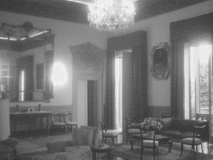
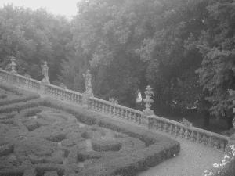

Inside "Villa di Quarto"
 
pictures courtesy of "Mark Twain
From An Italian Point of View"
"It
is rather comfortable (as European comfort goes), though
God himself couldn't
start through
it on a
given excursion and not get lost." from
a letter,
as quoted in Mark
Twain Overseas,
249
back
to exterior